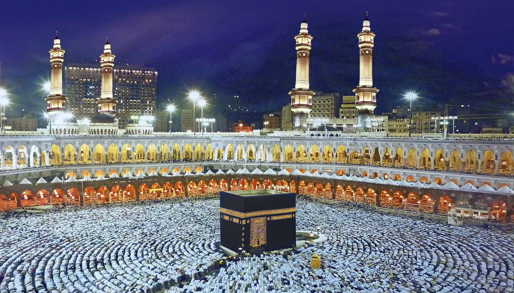
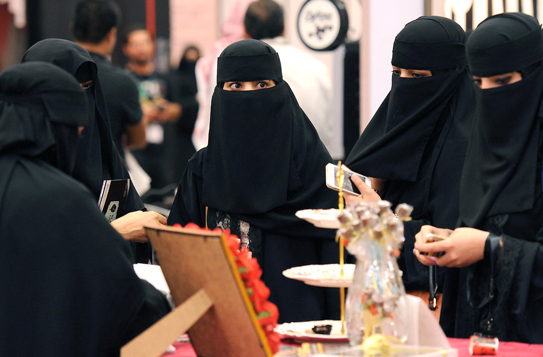
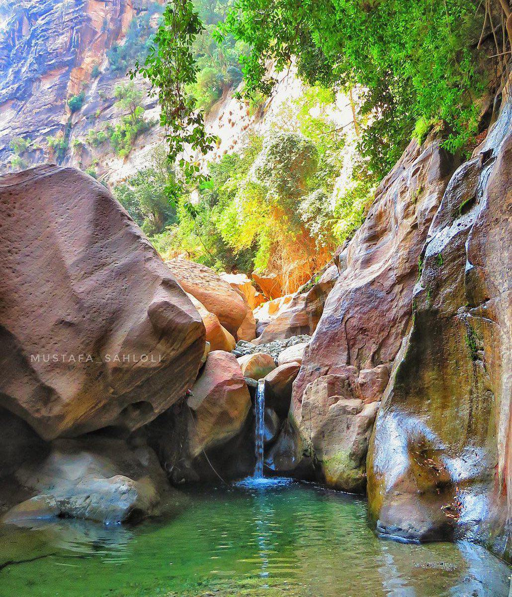

Саудовская Аравия
 Саудовская Аравия - страна, занимающая обширную территорию Аравийского полуострова и расстилающаяся от Красного моря до Персидского залива. Краткое название страны на арабском языке — ас-Саудия (араб. السعودية).
Саудовская Аравия - страна, занимающая обширную территорию Аравийского полуострова и расстилающаяся от Красного моря до Персидского залива. Краткое название страны на арабском языке — ас-Саудия (араб. السعودية).
Саудовскую Аравию часто называют «Страной двух святынь», имея в виду Мекку и Медину — два главных священных города ислама. Ежегодно более миллиона паломников приезжают в Саудовскую Аравию с различных стран мира. Считается, что священным долгом каждого мусульманина является совершение хаджа – паломничества в Мекку.

Вне всяких сомнений, найти более загадочную арабскую страну - задача не из простых. Саудовская Аравия – одна из самых закрытых стран в мире. Гражданам всех стран мира (кроме Кувейта, ОАЭ, Бахрейна и Омана) для въезда нужна виза. В настоящее время Саудовская Аравия туристических виз не выдает, тем не менее, немусульмане могут посетить королевство при наличии транзитной визой, в то время как представители Ислама имеют возможность получить визу на хадж или умра и посетить священные города. Существуют и рабочие, учебные, деловые визы.
Из общего ряда мусульманских стран Саудовская Аравия заметно выделяется. В стране господствует весьма своеобразное представление об Исламе – государственной религии. Так, страна использует законы шариата Среди тяжких действий, за которые следуют наказания отмечают неправомерное убийство, лжесвидетельство, многобожие, воровство, занятия колдовством и гаданием, склонность к азартным играм, прелюбодеяние, клятвопреступление, грубость по отношению к родителям. За наиболее серьезные проступки, включая убийство, оскорбление правящей династии монархов или религиозных устоев, а также прелюбодеяние, предусмотрены серьезные наказания вплоть до смертной казни. Хиджаб – традиционный мусульманский головной убор, закрывающий волосы и шею женщины – является обязательным к ношению. Тем не менее, в большинстве регионов Саудовской Аравии принято носить никаб – одеяние, покрывающее тело целиком и оставляющее лишь узкую щель для глаз. Следует отметить то, что среди населения данной страны не принято заводить дружеские отношения с противоположным полом, проводить с данной категорией лиц свободное время, если они не являются близкими родственниками. Приезжающие в Саудовскую Аравию женщины должны находиться в сопровождении в общественных местах. Пожалуйста, будьте внимательны.

Несмотря на большое количество ограничений и культуру, отчасти противоречащую чистому Исламу, Саудовская Аравия по-прежнему остается прекрасной страной, достойной посещения. Здесь вы найдете достаточное количество памятников природы и древней архитектуры.
Особое внимание заслуживает Мадаин-Салех – древнейший архитектурный памятник Саудовской Аравии. Две тысячи лет назад здесь, посреди Аравийской пустыни, располагался набатейский город Хегра – центр караванной торговли. Его расцвет пришелся на период с 200 года до нашей эры по 200 год нашей эры. Торговцы из Ассирии, Финикии, Египта и Александрии, посещавшие Хегру в течение четырех столетий, изменяли облик города. Заимствованные архитектурные элементы сегодня можно увидеть на фасадах гробниц – по тому, как они украшены, можно судить о том, кому принадлежит могила. На территории комплекса Мадаин-Салех ныне можно увидеть 111 монументальных скальных захоронений, датируемых I веком до нашей эры, а также башни, стены, жилые помещения, храмы и гидротехнические сооружения. Древнейшие постройки украшены вырезанными в скалах статуями и рельефами. В 2008 году Мадаин-Салех первым из достопримечательностей Саудовской Аравии был включен в список Всемирного наследия ЮНЕСКО.

Саудовская Аравия отличается и многообразием памятников природы, красивейших мест, отличным примером которых является ущелье, расположенное в провинции Джизан близ одноименного города

К сожалению, данная страна относится к малоизученным. Наверняка вы найдете множество различных и порой противоречивых мнений и фактов о Саудовской Аравии. Однако тем интереснее отправиться туда в поиске истины, не так ли?